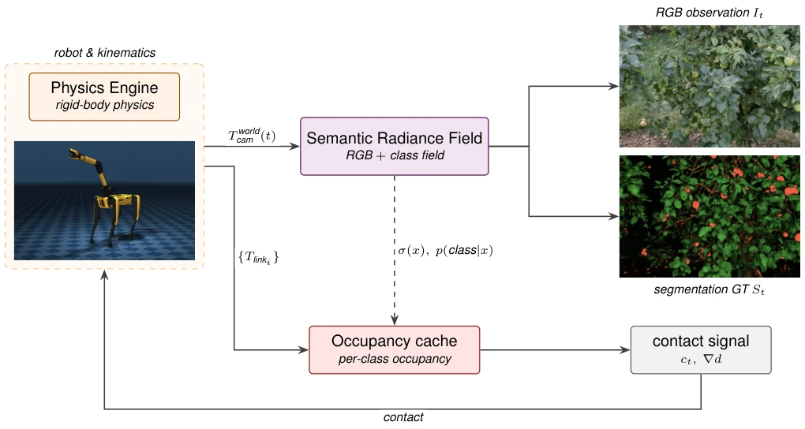
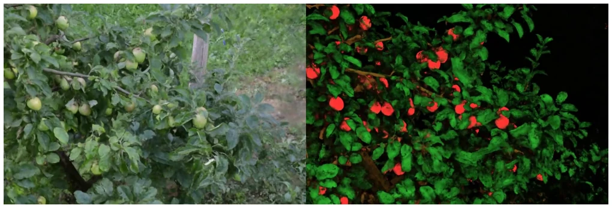

This paper finds a new task for the NeRF family: rather than merely reconstructing, use it directly as a simulator. The authors photograph real scenes, use SAM 3 to generate labels, and incorporate them into NeRF to create an SRF capable of semantic querying, rendering, and collision detection. The advantage is maximum realism, while the disadvantage is slow training and unknown generalization. The apple picking task is merely a demonstration, without comparing data efficiency against traditional simulators. However, transforming NeRF from a "photo editing tool" into a "training ground" is indeed a more reliable approach than pure generative simulation, at least ensuring geometry does not collapse. However, with 4 hours of training per image, for large-scale RL training, the "simulator" startup cost is somewhat high, akin to "using an ox to kill a chicken". If acceleration is not achieved subsequently, this method may only be suitable for offline evaluation, making it difficult to enter the online RL loop.
研究动机Motivation
具身智能训练缺好环境。合成器（[Duan et al., 2022]）假，生成器（[Brooks et al., 2024]）没真值。NeRF（[Mildenhall et al., 2020]）真但没语义。现有语义 NeRF（[Zhi et al., 2021]）多用于重建。本文要解决“真实几何”与“语义真值”不可兼得的问题，用 SRF 桥接两者。合成环境缺乏真实纹理，导致 Sim2Real 鸿沟；而真实重建缺乏语义标签，无法直接监督空间推理。SRF 试图统一这两者，让 Agent 在真实几何上学习语义任务。
Training for embodied intelligence lacks good environments. Simulators ([Duan et al., 2022]) are synthetic, while generators ([Brooks et al., 2024]) lack ground truth. NeRF ([Mildenhall et al., 2020]) is real but lacks semantics. Existing semantic NeRF ([Zhi et al., 2021]) is mostly used for reconstruction. This paper aims to solve the problem where "real geometry" and "semantic ground truth" cannot be obtained simultaneously, using SRF to bridge the two. Synthetic environments lack real textures, leading to the Sim2Real gap; whereas real reconstruction lacks semantic labels and cannot directly supervise spatial reasoning. SRF attempts to unify these two, allowing Agents to learn semantic tasks on real geometry.
方法Method
整体基于 FruitNeRF [Meyer et al., 2024] 扩展，采用 Nerfacto 因子化结构。输入是真实场景 RGB 图像，用 SAM 3 [Carion et al., 2025] 生成 2D 分割掩码。核心创新在于将语义头扩展为 C 个独立二进制头，而非单一 Softmax，允许点属于多个类别，且梯度不反向传播至密度场以防几何坍塌。训练目标结合光度损失和语义交叉熵损失，权重设为 1。SRF 提供三个接口：Render（渲染 RGB/深度/语义）、Semantic（3D 点语义概率）、Occupancy（密度用于碰撞）。在苹果采摘任务中，SRF 作为渲染器，物理引擎处理动力学，碰撞检测通过预蒸馏的占用缓存（如体素网格）实现，形成闭环。
Overall based on an extension of FruitNeRF [Meyer et al., 2024], adopting the Nerfacto factorized structure. Inputs are RGB images of real scenes, with 2D segmentation masks generated using SAM 3 [Carion et al., 2025]. The core innovation lies in extending the semantic head to C independent binary heads, rather than a single Softmax, allowing points to belong to multiple categories, and gradients are not backpropagated to the density field to prevent geometry collapse. The training objective combines photometric loss and semantic cross-entropy loss, with weights set to 1. SRF provides three interfaces: Render (rendering RGB/depth/semantic), Semantic (3D point semantic probability), and Occupancy (density for collision). In the apple picking task, SRF serves as the renderer, the physics engine handles dynamics, and collision detection is implemented via pre-distilled occupancy caches (such as voxel grids), forming a closed loop.

Figure 2: Semantic Radiance Field as a simulator. A physics engine (e.g., MuJoCo) handles rigid-body dynamics and exposes the camera pose T world cam (t) and link transforms {Tlinki} each step. The SRF renders an RGB observation It and a semantic map St from the camera pose; its density and per-class probabilities can be distilled offline into an occupancy cache (e.g., a voxel grid or octree) used for collision and goal-reaching queries. Contact signals are returned to the physics engine to close the loop.
实验Experiments
数据集来自 FruitNeRF 的苹果树场景，311 张 RGB 图像。训练使用 Adam 优化器，单张 H100 耗时约 4 小时。应用案例是苹果采摘任务，展示了 SRF 如何作为模拟器提供观测、真值分割和奖励信号。文中未提供与传统合成模拟器的定量对比，主要展示概念验证（Proof of Concept）。消融实验未详细列出，但强调了独立语义头防止几何坍塌。场景包含苹果、树枝、叶子三类，验证了多类别语义查询能力。未展示完整的 RL 训练收敛曲线，仅说明信号闭环可行性。
The dataset comes from the FruitNeRF apple tree scene, consisting of 311 RGB images. Training uses the Adam optimizer, taking approximately 4 hours per image on a single H100. The application case is the apple picking task, demonstrating how SRF serves as a simulator to provide observations, ground truth segmentation, and reward signals. The paper does not provide quantitative comparisons with traditional synthetic simulators, mainly demonstrating a Proof of Concept. Ablation experiments are not listed in detail, but emphasize that independent semantic heads prevent geometry collapse. The scene contains three classes: apples, branches, and leaves, verifying multi-class semantic query capabilities. Complete RL training convergence curves are not shown, only the feasibility of the signal closed loop is explained.

Figure 1: Radiance Field rendering (left) and Semantic Field blend rendering (right) from a trained Semantic Radiance Field. Classes for the SRF blend rendering: apple, branch, leaf; colored to match the class for visualization.